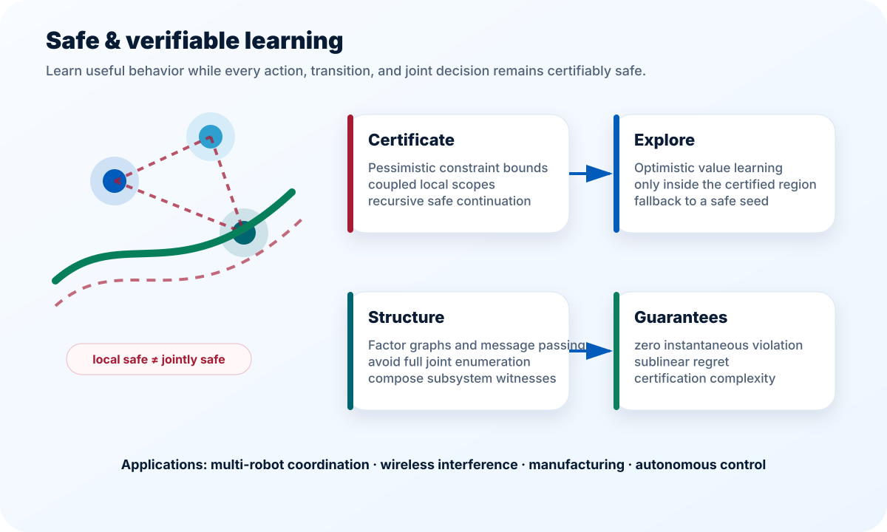
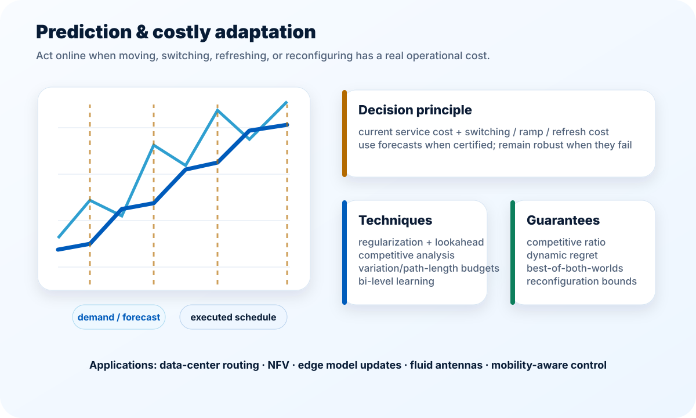
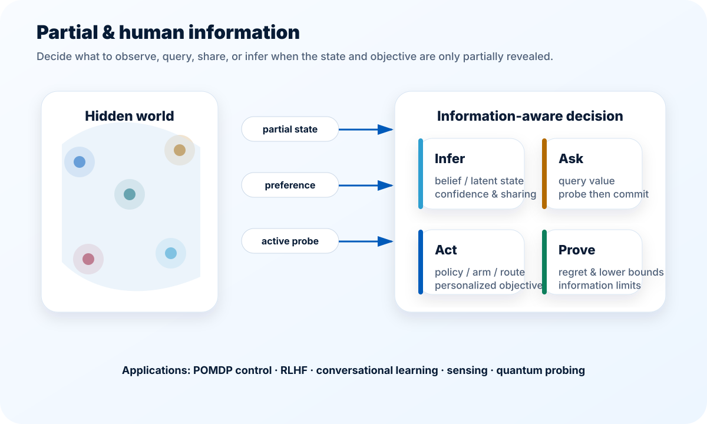
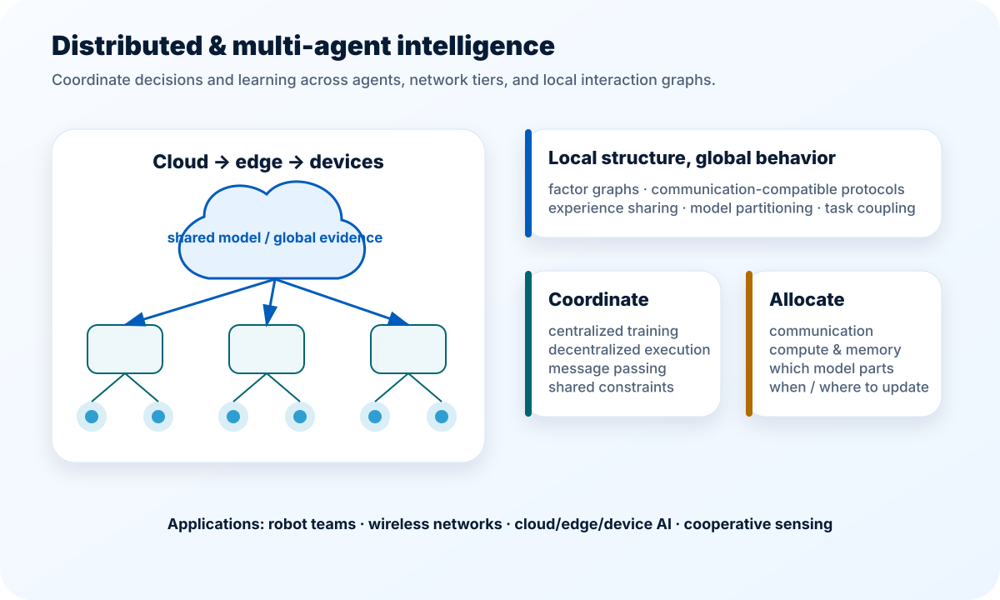
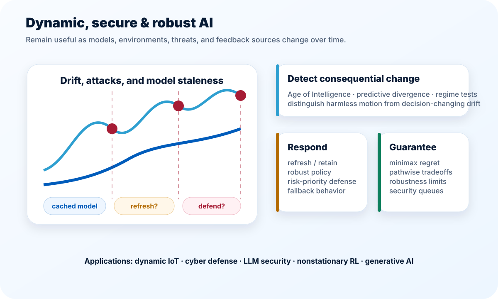

Performance measures
Regret, dynamic regret, competitive ratio, violation, refresh cost, information gain, and decision-aware freshness.
My research studies how intelligent systems can learn and coordinate under uncertainty while respecting safety, communication, computation, and reconfiguration realities.

Partial state, delayed feedback, predictions, active probes, human preferences, shared experience, and their costs.
Environments, workloads, threats, model versions, resource availability, and the value of information itself.
Agents, actions, constraints, cloud–edge–device tiers, communication graphs, and coupled operational decisions.
Safety at every step, low regret, bounded competitive loss, robust service, and scalable dependence on local structure.

In safety-critical systems, average feasibility is not enough: a robot cannot collide once and compensate later, and jointly chosen actions may be unsafe even when every local action looks feasible.
Online decisions often have memory: moving a data-center workload, changing a traffic or NFV route, switching an antenna port, or refreshing a model consumes time, energy, bandwidth, and service continuity.


In many systems neither the environment nor the objective is fully observed. State information may arrive selectively, feedback may be delayed, and human preferences may be multi-source, imperfect, or costly to query.
Networked intelligence spans interacting agents and cloud, edge, and device tiers. The challenge is to coordinate learning and control without requiring full information, unlimited communication, or centralized execution.


Nonstationary workloads, adversarial transitions, concept drift, stale models, LLM-security threats, and evolving attack surfaces make a one-time trained policy or static defense insufficient.
Filter the portfolio to see how papers and current projects connect safety, information, adaptation, coordination, and robustness.
Regret, dynamic regret, competitive ratio, violation, refresh cost, information gain, and decision-aware freshness.
Confidence sets, self-normalized concentration, martingales, robust optimization, and pessimistic certification.
Bellman recursion, safe predecessor operators, post-decision states, variation budgets, and switching dynamics.
POMDPs, active probing, preference queries, certified sharing, lower bounds, and measurement–disturbance tradeoffs.
Factor graphs, local scopes, centralized training/decentralized execution, message passing, and cross-level optimization.
Information-theoretic lower bounds, safety margins, exponential joint spaces, robustness barriers, and non-identifiability.
Potential collaborations include safe and multi-agent learning, online optimization, edge and wireless intelligence, AI security, foundation models, robotics, and quantum networking.